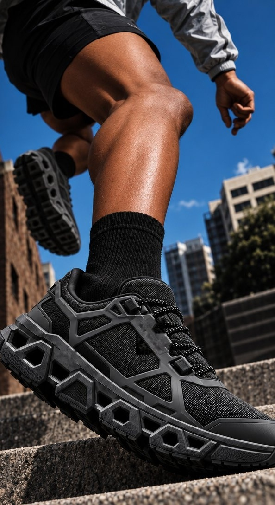
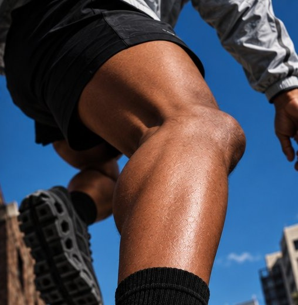
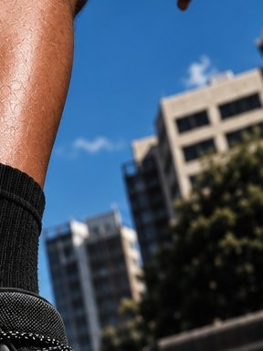
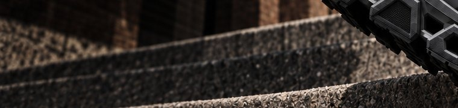
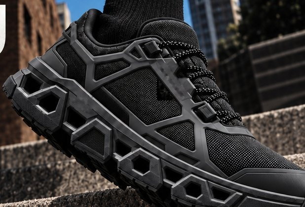

A
Exo-Cage Upper
TPU の外骨格がミッドフットを包み、横方向のブレを抑える。メッシュは 0.4 mm、必要な所だけ強く。
Urban Engineering
Built for a brighter
way forward
一段目を踏み込んだ瞬間から、街は練習場になる。
チューリッヒで設計された HEX LATTICE ソールが、硬いコンクリートの衝撃を前へ進む力に変える。

01 — Manifesto
The city is not in your way. Every stair is a rep. Every curb is a launch. We engineer the space between your foot and the concrete, so the only thing left is forward.
街は障害物じゃない。階段は一回ごとのトレーニング、縁石は踏み切り台。
私たちが設計するのは、足とコンクリートのあいだの数ミリ。残るのは、前へ進むことだけ。
02 — Lineup FW26
同じ HEX LATTICE プラットフォームから、走る場所に合わせて4つのモデルを設計。
03 — Technology
38個の六角セルが、それぞれ独立して潰れ、独立して戻る。着地の衝撃は一点に集まらず、ハニカム全体に分散してから推進力として返ってくる。カーソルを乗せるか、下のスライダーで荷重をかけてみてほしい。
A
TPU の外骨格がミッドフットを包み、横方向のブレを抑える。メッシュは 0.4 mm、必要な所だけ強く。
B
超臨界発泡の六角セル。セル壁の厚みを前足部 2.1 mm / 踵 2.6 mm と変え、着地から蹴り出しまでを一筆書きに。
C
濡れた花崗岩の階段で検証したラバーパターン。角を立てたラグが段鼻をつかむ。
04 — Configure
05 — Compare
| Model | Use | Weight | Drop | Stack | Cushion | Price |
|---|


06 — Zürich Lab
試作は、ラボのトレッドミルでは終わらない。チューリッヒ旧市街の石段、東京の歩道橋、雨上がりの駅の階段。実際の街で 1,200 km 以上を走り込み、47 回の試作を経て RISE は完成した。
07 — Stories

Field note · 05:40 · Shibuya
出勤前の30分を、駅前の階段だけで組み立てる。上りは前足部、下りは踵。HEX LATTICE の硬さの違いが一番よく分かる時間帯。

Design · Exo-Cage
最初の試作には 21 本の補強ラインがあった。残したのは 9 本。
“階段を見つけると、遠回りしてでも上りたくなる。そういう靴を作りたかった。”
新作の先行案内と、都市ランのルートを月1回お届けします。